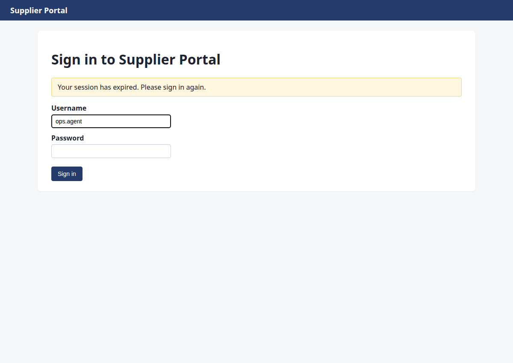
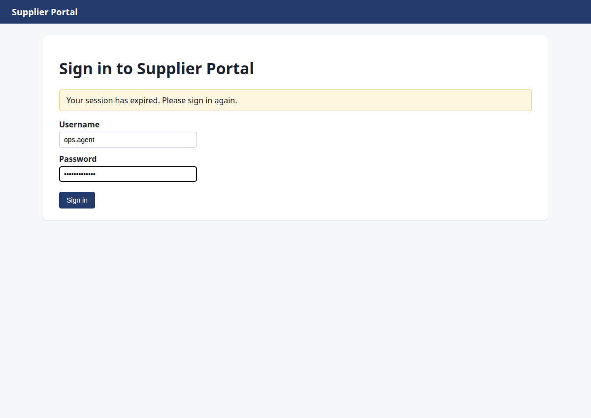
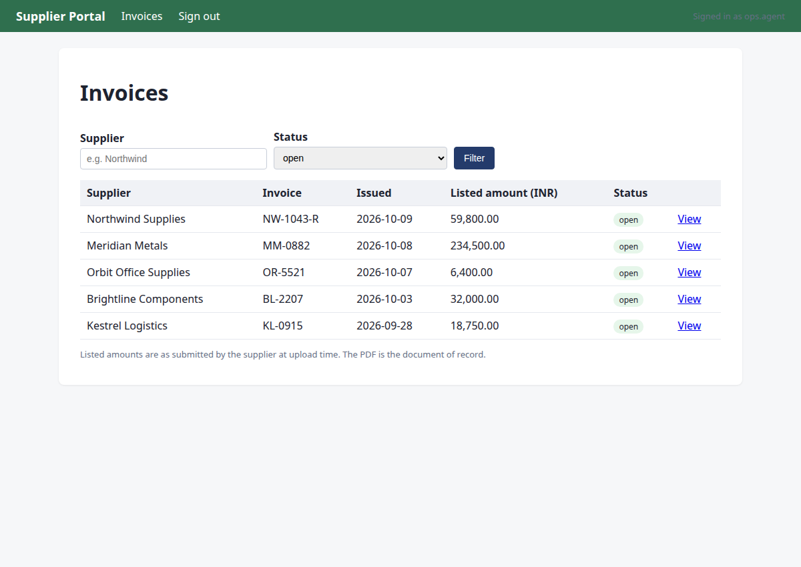
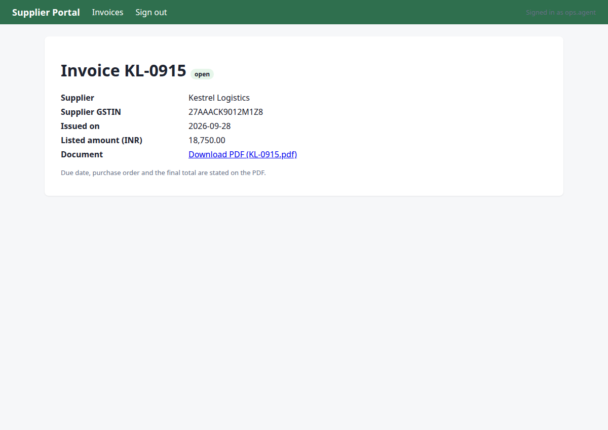
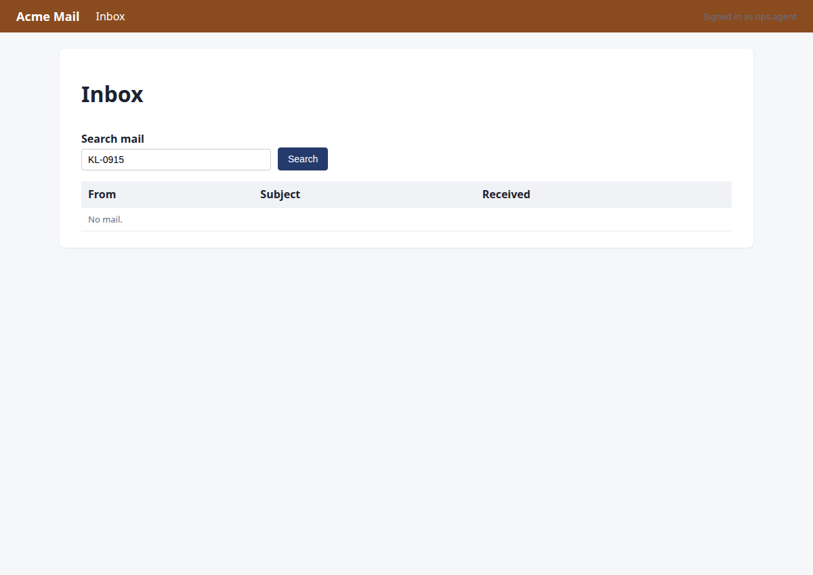
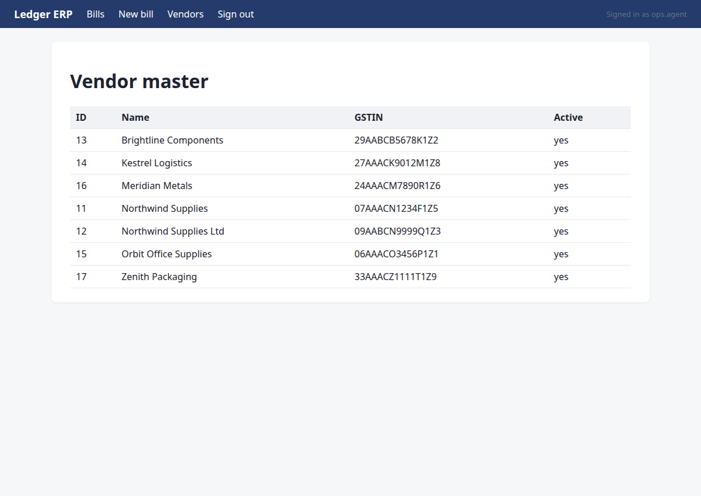
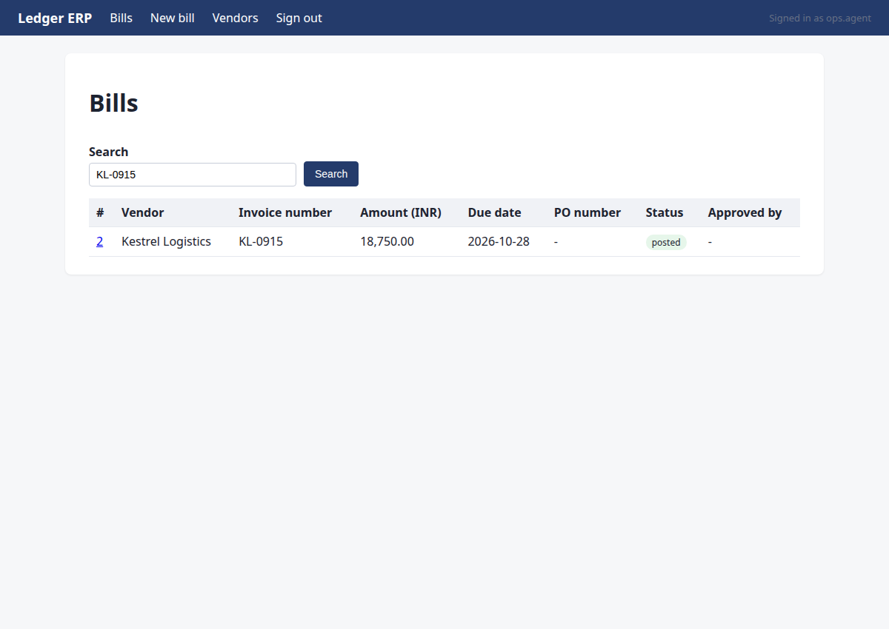

Enter Kestrel Logistics' invoice KL-0915 into Ledger
Status: completed · verifier: completed — all 1 assertion(s) hold; no undeclared writes
KL-0915 is already recorded in ledger (exists: record #2). I did not enter it again.
Verification
Steps
Step 1 · navigate
http://127.0.0.1:8000/portal/login?next=/portal/invoices%3Fstatus%3Dopen&reason=signed_out
Opening the supplier portal filtered to all open invoices.
{"url": "http://127.0.0.1:8000/portal/invoices?status=open"}
→ opened http://127.0.0.1:8000/portal/login?next=/portal/invoices%3Fstatus%3Dopen&reason=signed_out (HTTP 200)

Step 2 · type
http://127.0.0.1:8000/portal/login?next=/portal/invoices%3Fstatus%3Dopen&reason=signed_out
Session expired; signing in again.
{"id": 1, "text": "ops.agent"}
→ typed "ops.agent"

Step 3 · type
http://127.0.0.1:8000/portal/login?next=/portal/invoices%3Fstatus%3Dopen&reason=signed_out
Entering the password.
{"id": 2, "text": "acme-ops-2026"}
→ typed "acme-ops-2026"

Step 4 · click
http://127.0.0.1:8000/portal/invoices?status=open
Submitting the sign-in form.
{"id": 3}
→ clicked "Sign in"

Step 5 · note_fact
http://127.0.0.1:8000/portal/invoices?status=open
Target invoice is KL-0915; noting it.
{"key": "invoice_number", "value": "KL-0915", "source": "http://127.0.0.1:8000/portal/invoices?status=open"}
→ noted invoice_number = 'KL-0915' (source: http://127.0.0.1:8000/portal/invoices?status=open)

Step 6 · click
http://127.0.0.1:8000/portal/invoices/5
Opening invoice KL-0915.
{"id": 10}
→ clicked "View"

Step 7 · read_pdf
http://127.0.0.1:8000/portal/invoices/5
Reading the invoice PDF, the document of record.
{"url": "/portal/invoices/5/pdf"}
→ PDF text:
Kestrel Logistics
GSTIN 27AAACK9012M1Z8 | finance@kestrel.example
TAX INVOICE
Invoice number:
KL-0915
Invoice date:
2026-09-28
Due date:
2026-10-28
Purchase order:
-
Bill to:
Acme Robotics Pvt Ltd, New Delhi
Item
Qty
Unit price
Amount
Freight Pune-Delhi, 3 pallets
1
Rs 18,750.00
Rs 18,750.00
Total due (INR):
Rs 18,750.00

Step 8 · note_fact
http://127.0.0.1:8000/portal/invoices/5
Noting pdf_total:KL-0915 from the PDF.
{"key": "pdf_total:KL-0915", "value": "1875000", "source": "/portal/invoices/5/pdf"}
→ noted pdf_total:KL-0915 = '1875000' (source: /portal/invoices/5/pdf)

Step 9 · note_fact
http://127.0.0.1:8000/portal/invoices/5
Noting due_date:KL-0915 from the PDF.
{"key": "due_date:KL-0915", "value": "2026-10-28", "source": "/portal/invoices/5/pdf"}
→ noted due_date:KL-0915 = '2026-10-28' (source: /portal/invoices/5/pdf)

Step 10 · note_fact
http://127.0.0.1:8000/portal/invoices/5
Noting po:KL-0915 from the PDF.
{"key": "po:KL-0915", "value": "", "source": "/portal/invoices/5/pdf"}
→ noted po:KL-0915 = '' (source: /portal/invoices/5/pdf)

Step 11 · note_fact
http://127.0.0.1:8000/portal/invoices/5
Noting vendor_gstin:KL-0915 from the PDF.
{"key": "vendor_gstin:KL-0915", "value": "27AAACK9012M1Z8", "source": "/portal/invoices/5/pdf"}
→ noted vendor_gstin:KL-0915 = '27AAACK9012M1Z8' (source: /portal/invoices/5/pdf)

Step 12 · navigate
http://127.0.0.1:8000/mail/login?next=/mail/inbox%3Fq%3DKL-0915&reason=signed_out
PDF facts noted; checking the mailbox for revisions.
{"url": "http://127.0.0.1:8000/mail/inbox?q=KL-0915"}
→ opened http://127.0.0.1:8000/mail/login?next=/mail/inbox%3Fq%3DKL-0915&reason=signed_out (HTTP 200)

Step 13 · type
http://127.0.0.1:8000/mail/login?next=/mail/inbox%3Fq%3DKL-0915&reason=signed_out
Session expired; signing in again.
{"id": 1, "text": "ops.agent"}
→ typed "ops.agent"

Step 14 · type
http://127.0.0.1:8000/mail/login?next=/mail/inbox%3Fq%3DKL-0915&reason=signed_out
Entering the password.
{"id": 2, "text": "acme-ops-2026"}
→ typed "acme-ops-2026"
Step 15 · click
http://127.0.0.1:8000/mail/inbox?q=KL-0915
Submitting the sign-in form.
{"id": 3}
→ clicked "Sign in"

Step 16 · note_fact
http://127.0.0.1:8000/mail/inbox?q=KL-0915
No relevant mail; moving to the ERP.
{"key": "mail_check:KL-0915", "value": "no relevant mail", "source": "http://127.0.0.1:8000/mail/inbox?q=KL-0915"}
→ noted mail_check:KL-0915 = 'no relevant mail' (source: http://127.0.0.1:8000/mail/inbox?q=KL-0915)

Step 17 · navigate
http://127.0.0.1:8000/ledger/login?next=/ledger/vendors&reason=signed_out
Opening the vendor master to match by GSTIN.
{"url": "http://127.0.0.1:8000/ledger/vendors"}
→ opened http://127.0.0.1:8000/ledger/login?next=/ledger/vendors&reason=signed_out (HTTP 200)

Step 18 · type
http://127.0.0.1:8000/ledger/login?next=/ledger/vendors&reason=signed_out
Session expired; signing in again.
{"id": 1, "text": "ops.agent"}
→ typed "ops.agent"

Step 19 · type
http://127.0.0.1:8000/ledger/login?next=/ledger/vendors&reason=signed_out
Entering the password.
{"id": 2, "text": "acme-ops-2026"}
→ typed "acme-ops-2026"

Step 20 · click
http://127.0.0.1:8000/ledger/vendors
Submitting the sign-in form.
{"id": 3}
→ clicked "Sign in"

Step 21 · note_fact
http://127.0.0.1:8000/ledger/vendors
GSTIN 27AAACK9012M1Z8 belongs to Kestrel Logistics.
{"key": "vendor_name:KL-0915", "value": "Kestrel Logistics", "source": "http://127.0.0.1:8000/ledger/vendors"}
→ noted vendor_name:KL-0915 = 'Kestrel Logistics' (source: http://127.0.0.1:8000/ledger/vendors)

Step 22 · navigate
http://127.0.0.1:8000/ledger/bills?q=KL-0915
Searching the ERP for this invoice number.
{"url": "http://127.0.0.1:8000/ledger/bills?q=KL-0915"}
→ opened http://127.0.0.1:8000/ledger/bills?q=KL-0915 (HTTP 200)

Step 23 · note_fact
http://127.0.0.1:8000/ledger/bills?q=KL-0915
Already recorded; noting the duplicate.
{"key": "duplicate_check:KL-0915", "value": "exists: record #2", "source": "http://127.0.0.1:8000/ledger/bills?q=KL-0915"}
→ noted duplicate_check:KL-0915 = 'exists: record #2' (source: http://127.0.0.1:8000/ledger/bills?q=KL-0915)

Step 24 · done
http://127.0.0.1:8000/ledger/bills?q=KL-0915
The invoice is already recorded; reporting instead of entering it again.
{"summary": "KL-0915 is already recorded in ledger (exists: record #2). I did not enter it again.", "assertions": [{"kind": "count", "system": "ledger", "entity": "bill", "match": {"invoice_number": "KL-0915"}, "expect": {"count": 1}, "note": "exactly one record must exist: the pre-existing one"}]}
→ assertions recorded; verification will decide the status
